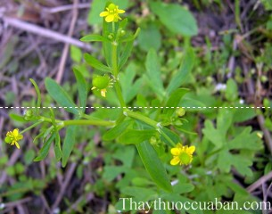

Tên khác
Tên thường gọi: Mao lương, Mao lương độc, Mao cấn độc, Thạch long nhuế,
Tên tiếng Trung: 石龙芮
Tên khoa học: Ranunculus sceleratus L.
Họ khoa học: thuộc họ Hoàng liên - Ranunculaceae.
Cây mao lương
(Mô tả, hình ảnh cây mao lương, phân bố, thu hái, thành phần hóa học, tác dụng dược lý...)
Mô tả:

Ra hoa tháng 2-6.
Bộ phận dùng:
Toàn cây - Herba Ranunculi, ở Trung Quốc gọi là Thạch long nhuế.
Nơi sống và thu hái: Loài của Ấn Ðộ, Trung Quốc và Việt Nam. Ở nước ta cây thường mọc trên đất khô dần, phát tán theo dòng nước sông, mọc ở Vĩnh Phú, Hà Tây, Hà Nội, Nam Hà, Hải Phòng.
Thu hái cây vào mùa hè rửa sạch phơi khô.
Thành phần hoá học:
Cây chứa anemonin và 2,50% protoanemonin ngay sau khi cây nở rộ. Ở cây tươi có chất rất kích thích là anemonol nhưng khi phơi khô sẽ biến thành một chất kém hoạt động hơn là anenonin.
Tác dụng dược lý:
Lá tươi chứa protoanemonin, nó có thể gây viêm da, phổng da.
Khi uống có thể gây viêm dạ dày ruột và triệu chứng của nhiễm độc nặng, nhưng hiếm khi gây tử vong vì hương vị cay rất mạnh mẽ của họ, nói chung sẽ không ăn nhiều. Sự xuất hiện thành phần kích thích được protoanemonin sau khi trùng hợp có thể trở nên không kích thích hiệu quả Anemonin.
Tác dụng kháng khuẩn: Kháng khuẩn: protoanemonin chống lại vi khuẩn Gram âm và dương và nấm có một sự ức chế tốt, chẳng hạn như liên cầu (1: 60.000), Escherichia coli (1: 83.000-33.000), Candida albicans (1: 100.000) là ức chế.
Tác dụng chống histamine: thử nghiệm trên lợn
Vị thuốc mao lương
(Công dụng, liều dùng, tính vị, quy kinh)
Tính vị, tác dụng:
Vị đắng, tính bình, có độc. Cây có tác dụng tiêu phù, tiêu viêm, trừ sốt rét, điều kinh, lợi sữa.
Chủ trị:
Trị nhọt độc, lao tràng nhạc, sốt rét, viêm loét chân, thấp khớp
Công dụng:
Chỉ dùng ngoài, giã cây tươi hoặc chế thành thuốc bôi dẻo đắp, nếu thấy chỗ đắp bị sưng thì tháo thuốc đắp ra.
Ở ẤnÐộ được dùng đắp vào da để làm phồng da.
Hạt có thể dùng giã nhỏ đắp lên mụn nhọt chưa vỡ mủ hay những chỗ sưng tấy, áp xe. Còn được dùng làm thuốc dễ tiêu, làm dịu hơi thở và chữa bệnh về thận.
Liều dùng:
Dưới dạng thuốc sắc uống: dạng khô dùng 3-9g.
Giảm liều lượng khi dùng kết hợp với một số loại thuốc khác
Tác dụng chữa bệnh của vị thuốc mao lương
Chữa lao hạch bạch huyết:
Giã cây tươi đắp.
Chữa nhọt, viêm mủ da, rắn cắn
Rửa cây tươi và giã lấy dịch bôi.
Tham khảo
Lưu ý khi dùng:
Nuốt phải có thể gây ra cháy miệng, tiếp theo là sưng, khó nhai, tiêu chảy nặng, mạch chậm, khó thở, giãn đồng tử, trường hợp nặng có thể gây tử vong.
Nếu bị trúng độc cần rửa dạ dày 0,2% dung dịch kali permanganat, phục vụ lòng trắng trứng và than củi, truyền tĩnh mạch dung dịch nước muối đường, khi atropine đau bụng và điều trị triệu chứng khác. Da và màng nhầy lạm dụng hoặc thừa nước có sẵn, sấy khô, axit boric hoặc dung dịch axit tannic.
Nơi mua bán vị thuốc Mao lương đạt chất lượng ở đâu?
Trước thực trạng thuốc đông dược kém chất lượng, nguồn gốc không rõ ràng,... xuất hiện tràn lan trên thị trường, làm ảnh hưởng tới hiệu quả điều trị cũng như ảnh hưởng tới sức khỏe của bệnh nhân. Việc lựa chọn những địa chỉ uy tín để mua thuốc đông dược là rất quan trọng và cần thiết. Vậy khách hàng có thể mua vị thuốc Mao lương ở đâu?
Mao lương là vị thuốc nam quý, được sử dụng rộng rãi trong YHCT. Hiện tại hầu hết các cửa hàng thuốc đông dược, phòng khám đông y, phòng chẩn trị YHCT... đều có bán vị thuốc này. Tuy nhiên người mua nên chọn những địa chỉ có uy tín, đảm bảo chất lượng, có giấy phép hoạt động để mua được vị thuốc đạt chất lượng.
Với mong muốn bệnh nhân được sử dụng những loại dược liệu đúng, chất lượng tốt, phòng khám Đông y Nguyễn Hữu Toàn không chỉ là đia chỉ khám chữa bệnh tin cậy, uy tín chất lượng mà còn cung cấp cho khách hàng những vị thuốc đông y (thuốc nam, thuốc bắc) đúng, chuẩn, đạt chuẩn chất lượng. Các vị thuốc có trong tiêu chuẩn Dược điển Việt Nam đều được nghành y tế kiểm nghiệm đạt chất lượng tiêu chuẩn.
Vị thuốc Mao lương được bán tại Phòng khám là thuốc đã được bào chế theo Tiêu chuẩn NHT.
Giá bán vị thuốc Mao lương tại Phòng khám Đông y Nguyễn Hữu Toàn: Gọi 18006834 để biết chi tiết
Tùy theo thời điểm giá bán có thể thay đổi.
+ Khách hàng có thể mua trực tiếp tại địa chỉ phòng khám: Cơ sở 1: Số 481 lô 22 Lê Hồng Phong, Phường Gia Viên, Thành phố Hải Phòng
+ Mua trực tuyến: Thuốc được chuyển qua đường bưu điện. Khi nhận được thuốc khách hàng thanh toán tiền COD.
Tag: cay Mao luong, vi thuoc Mao luong, cong dung Mao luong, Hinh anh cay Mao luong, Tac dung Mao luong, Thuoc nam
Thaythuoccuaban.com Tổng hợp
*************************